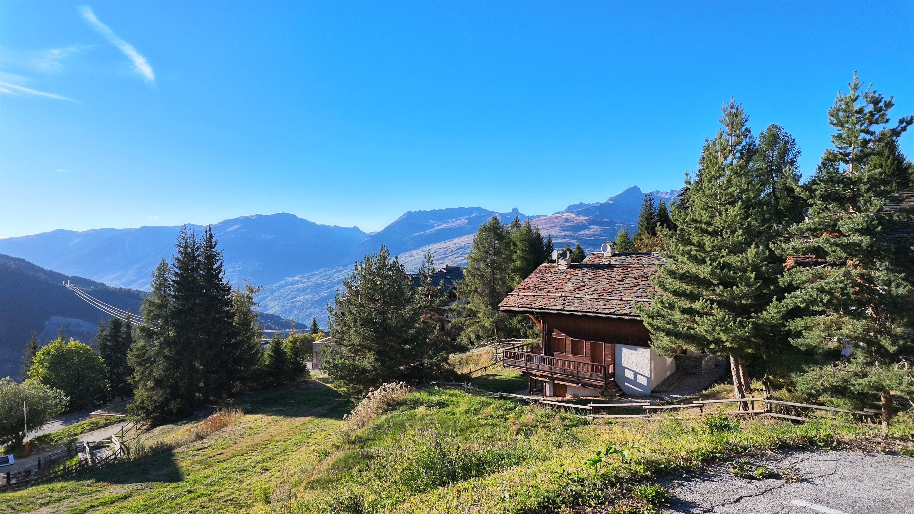

Above the valley
45.5°N · 6.7°E · 1800m
Late September in the Tarentaise. The alpine chalets still holding the last of the summer sun, the valley floor already in shadow. At this altitude the temperature drops fast once the light goes — the kind of shift that makes you understand why the animals up here don't wait for it. You either adapt or you descend.